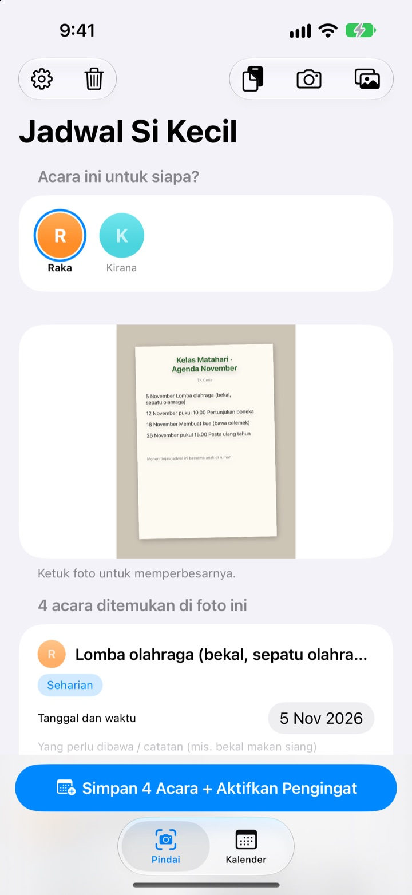
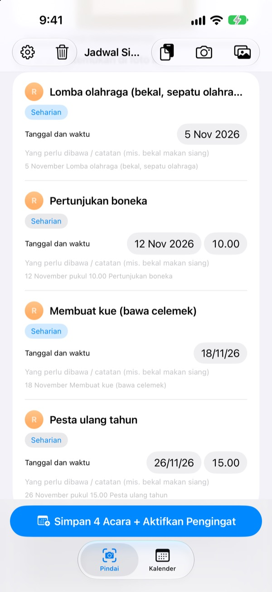
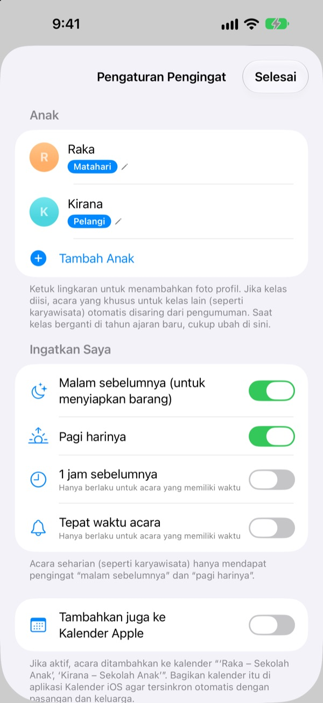
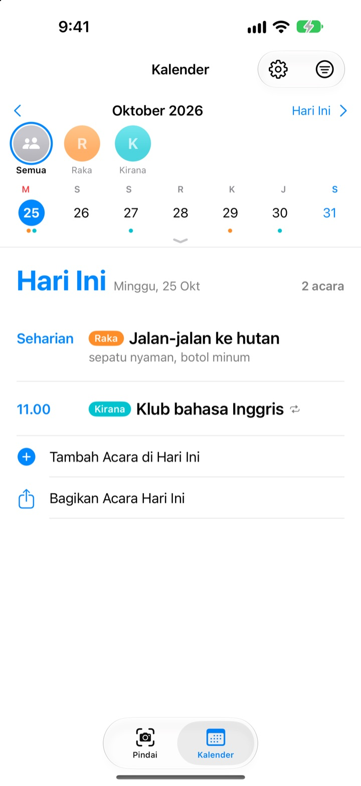

Cukup foto edarannya.
Kami ingatkan bekalnya.
Foto kalender bulanan yang dibawa pulang dari sekolah. Jadwal Si Kecil membaca tanggal, jam, dan nama kegiatan, lalu memasukkan semuanya sekaligus. Malam sebelum karyawisata, jam 8, datang pengingat: jangan lupa bekal.
Semua fitur gratis. Foto Anda tidak pernah keluar dari iPhone.

Coba foto surat edaran
Ini contoh surat edaran kegiatan bulan depan. Fotolah, dan seperti di aplikasi, kegiatan serta barang bawaan langsung diambil, lalu pengingat dijadwalkan di waktu yang Anda pilih.
Masih menyalin surat edaran sekolah ke kalender?
Lima sampai enam kegiatan sebulan, dan tiap kali barang bawaannya beda: bekal, baju olahraga, celemek. Kalender yang ditempel di kulkas tidak terlihat di perjalanan ke kantor, dan biasanya baru teringat pagi itu juga. Jadwal Si Kecil mengubah selembar kertas itu jadi acara di kalender dan pengingat.
Satu foto, sebulan penuh
Kalender bentuk tabel, surat untuk orang tua, atau pengumuman satu lembar: foto atau pilih dari perpustakaan foto, lalu tanggal, jam, dan nama kegiatan dibacakan untuk Anda. Pesan dari guru juga bisa ditempel; kata seperti “besok” atau “Jumat ini” diubah jadi tanggal sebenarnya.
Sebelum disimpan, judul, tanggal, atau barang bawaan bisa langsung diperbaiki, dan yang tidak perlu tinggal digeser untuk dihapus. Isi kelas anak Anda, maka kegiatan khusus kelas lain tersaring otomatis.

Malam sebelumnya, diingatkan
Pilih jam 20.00 malam sebelumnya, 07.30 pagi harinya, 1 jam sebelumnya, atau tepat waktu. Barang bawaan ikut tampil di pengingat, jadi tas tidak ada yang ketinggalan.
Dengan Kalender Apple, acara masuk ke kalender bernama anak Anda dan tidak pernah tercatat dua kali.

Anak lebih dari satu, sekeluarga ikut lihat
Tiap anak punya warna sendiri. Lihat semuanya sekaligus atau satu per satu; dari riwayat sebelumnya, aplikasi menebak surat edaran baru itu milik anak yang mana.
Kirim tautan undangan, maka pasangan, kakek-nenek, atau pengasuh bisa melihat dan mengubah jadwal yang sama. Widget di Layar Utama menampilkan acara berikutnya.

Mulai dalam tiga langkah
- 1
Tambahkan anak
Isi nama dan kelas. Foto profil bisa menyusul.
- 2
Foto surat edarannya
Foto lurus dari depan dengan teks yang jelas supaya terbaca baik.
- 3
Periksa lalu simpan
Izinkan notifikasi, lalu pengingat datang di waktu yang dipilih.
Kapan pengingat datang
- 20.00 malam sebelumnya
- Siapkan barang. Aktif dari awal
- 07.30 pagi harinya
- Acara hari ini. Aktif dari awal
- 1 jam sebelumnya
- Hanya untuk acara yang ada jamnya
- Tepat waktu acara
- Hanya untuk acara yang ada jamnya
Acara seharian seperti karyawisata hanya mendapat pengingat malam sebelumnya dan pagi harinya. Masing-masing bisa dinyalakan atau dimatikan kapan saja di pengaturan.
Semua fitur gratis
Gratis
- Membaca acara dari foto dan pesan
- Perbaiki sebelum simpan, saring kelas lain
- Pengingat malam sebelumnya, pagi, 1 jam sebelum, dan tepat waktu
- Warna untuk tiap anak dan kalender gabungan
- Sinkron dengan Kalender Apple
- Berbagi dengan keluarga lewat tautan
- Widget Layar Utama
Dukung pengembang
- Dari pengaturan, Anda bisa memberi tip kecil sesuka hati
- Tip tidak membuka fitur apa pun. Tanpa tip pun aplikasinya sama
Tanpa iklan, tanpa langganan.
Pertanyaan umum
Foto seperti apa yang bisa dibaca?
Kalender bulanan bentuk tabel, surat edaran berupa kalimat, serta pengumuman atau brosur satu lembar. Foto yang diambil lurus dari depan dengan teks jelas akan terbaca lebih baik. Anda juga bisa memilih beberapa foto untuk dipindai sekaligus.
Ada kegiatan yang hilang atau judulnya salah ketik.
Tulisan tangan atau tulisan pudar bisa sulit dibaca. Perbaiki judul, tanggal, atau barang bawaan langsung di daftar, atau geser untuk menghapus yang tidak perlu. Kegiatan yang terlewat bisa ditambahkan lewat “Tambah Acara Secara Manual” di tab Pindai, lalu simpan lagi.
Pengingat tidak muncul.
Periksa di Pengaturan > Notifikasi > Jadwal Si Kecil bahwa notifikasi sudah diizinkan. Di pengaturan aplikasi (⚙️) Anda juga bisa memilih pengingat mana yang ingin diterima.
Kegiatan kelas lain ikut masuk.
Isi nama kelas anak Anda di pengaturan, maka kegiatan khusus kelas lain akan tersaring. Kalau naik kelas dan pindah kelas, cukup ubah di sana.
Anak saya lebih dari satu.
Di pengaturan Anda bisa menambahkan anak sebanyak apa pun, masing-masing dengan foto profil. Saat memindai, pilih ini jadwal siapa: di kalender tiap anak punya warna sendiri, dan Anda bisa berpindah antara tampilan gabungan dan filter per anak.
Bagaimana berbagi jadwal dengan pasangan?
Buka “Berbagi Jadwal” di pengaturan, ketuk “Undang untuk Melihat Bersama”, lalu kirim tautannya lewat pesan. Yang diundang bisa melihat dan mengubah jadwal semua anak, dan perubahan dari pihak mana pun langsung terlihat di keduanya. Ini tidak terkait dengan Berbagi Keluarga dari Apple.
Ada cara berbagi lain?
Tombol bagikan di tab Kalender bisa mengirim file Jadwal Si Kecil, file kalender (.ics), atau ringkasan teks. Jika “Tambahkan juga ke Kalender Apple” dinyalakan, akan dibuat kalender bernama anak Anda; bagikan kalender itu lewat iCloud di app Kalender agar keluarga juga ikut tahu.
Apakah foto atau jadwal saya dikirim ke suatu tempat?
Tidak. Teks di foto dibaca sepenuhnya di perangkat, dan data hanya disimpan di sana. Jadwal hanya lewat iCloud Anda bila Anda mengundang seseorang melalui “Berbagi Jadwal”, dan hanya kepada orang yang diundang.
Ada masalah atau ingin fitur baru? Kirim email ke leeo@kakao.com. Biasanya kami membalas dalam 2–3 hari. Sertakan model perangkat dan versi iOS supaya lebih cepat terbantu.